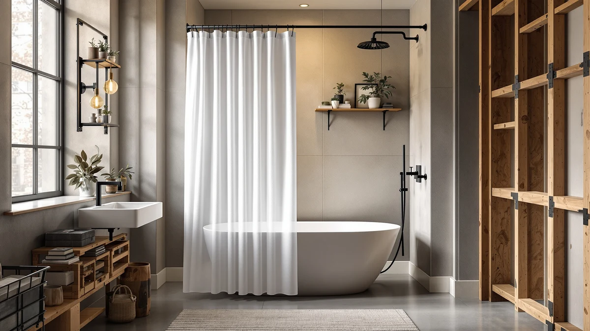

Short Shower Curtain (2026)
Prices and picks verified as of August 2026. Independent, reader-supported reviews.


Quick Answer
If you need a short shower curtain that won't pool water on the floor of a raised tub or a short stall, the WellColor Short Shower Curtain Liner ($13.99) is the best all-around pick: at 72x66 inches it drops a full six inches shorter than a standard curtain, so it clears the tub lip and dries fast instead of sitting in standing water. If you want a decorative curtain instead of a liner, the Barossa Design and ALYVIA SPRING picks below match that same shortened length, and the Titanker liner is the cheapest fix at $7.49.
Our pick: WellColor Short Shower Curtain Liner — $13.99 Check Price on Amazon
Bottom line: our top pick is the WellColor Short Shower Curtain Liner 72x66 White Water at $13.99. The best budget option is the Titanker Short Shower Curtain Liner 72x65 at $7.49.
Things to Know Before You Buy
- "Short" means 60 to 66 inches, not 72: A standard curtain or liner drops 72 inches. Every pick in this short shower curtain roundup measures 60 to 66 inches, a difference of 6 to 12 inches that decides whether the bottom edge clears your tub or sits in a puddle on the floor.
- Measure your rod-to-floor distance before you buy: Raised tubs, garden tubs, and some walk-in shower bases sit higher than a standard alcove tub. Measure from the rod down to the tub floor or shower base; if that number is under about 68 inches, a full-length curtain will bunch and stay wet.
- A liner and a curtain solve different problems: A short liner like the WellColor or Titanker fixes the pooling issue behind whatever decorative curtain you already own. A short curtain like the Barossa Design or ALYVIA SPRING can work on its own, though a separate liner still adds waterproofing.
- PEVA dries faster, fabric looks more finished: The PEVA liners in this lineup shed water and dry quicker, which matters in a bathroom with weak ventilation. The fabric curtains hang straighter and look more decorative, but they need a liner behind them to stay fully waterproof.
- Width stays standard even when length shortens: All seven picks here keep a 71 to 72-inch width, so a shorter drop won't leave gaps at the sides of your tub or stall opening.
A short shower curtain fixes a problem most standard curtains create by accident: six or more inches of extra fabric pooling on the floor of a raised tub, garden tub, or stall base that doesn't reach the usual 72-inch drop. That puddled fabric stays damp long after your shower ends, and damp fabric sitting against a bathroom floor is exactly where mildew gets started.
We compared seven short curtains and liners, ranging from the 60-inch N&Y HOME up to the 66-inch WellColor, Titanker, and ALYVIA SPRING options, on length, material, price, and verified owner feedback. For most people dealing with a raised tub or a short stall, the WellColor Short Shower Curtain Liner at $13.99 is the pick worth starting with: its 72x66 sizing clears a typical raised-tub lip, the PEVA material dries faster than fabric, and its 2,392 reviews at 4.6 stars are the strongest track record in this lineup.
That said, a liner isn't the only route. If you want a curtain that looks finished on its own, the Barossa Design and ALYVIA SPRING picks below match that same shortened length in fabric instead of PEVA, and the $7.49 Titanker liner is the cheapest way to solve the pooling problem if budget is the deciding factor. Below we explain how we picked, how each option compares on the numbers that matter, and where each one falls short. For a short shower curtain that fixes the pooling problem without a big spend, WellColor remains our starting point.
Why You Should Trust Us
I'm Ilane Tall, and I cover bath and shower gear for Best Shower Curtains. Raised and garden tubs come up constantly in my research, and the complaint is always the same: a standard 72-inch curtain looks fine in the package, then pools several inches of fabric on the floor the first time you use it. This short shower curtain guide is built around fixing that exact problem.
For this roundup I relied on the published dimensions, materials, and prices for each product, plus the pattern of complaints and praise across each item's verified buyer reviews. I did not physically install or use any of these curtains. The judgments below come from comparing specs and aggregating what verified owners report.
How We Picked
We started by filtering for actual drop length. A lot of "short shower curtain" searches turn up standard 72-inch products with no size change at all, so we kept only curtains and liners published at 60 to 66 inches, roughly 6 to 12 inches shorter than the default.
From there we weighed fit, material, and price together rather than working down a checklist. Fit meant checking whether the shortened drop actually matches a common raised-tub or stall-shower gap, while the width still covers a standard 71 to 72-inch opening. Material meant keeping a mix of PEVA liners for fast drying and fabric curtains for a more finished look, since not everyone wants to buy both a curtain and a liner. And on price and review strength, our picks range from the $7.49 Titanker up to the $19.99 Barossa Design fabric options; we weighted our top pick toward the WellColor's 2,392 verified reviews over listings with no published review history.
How We Compared
We compared each short shower curtain and liner on the numbers that actually matter for a pooling problem: published length, width, material, and price. The 6-inch gap between the N&Y HOME's 60-inch drop and the 66-inch WellColor, Titanker, and ALYVIA SPRING picks isn't trivial when you're working around a specific tub lip, so we cross-checked every dimension against the product listing rather than relying on the product name alone.
We also read through each product's verified buyer reviews, looking for patterns rather than one-off complaints. Reviewers on the WellColor consistently note that the shortened drop stops water from sitting on the floor after a shower, which is the exact problem this guide is solving for. Where a listing had no published rating or review count, like several of the Barossa Design and ALYVIA SPRING picks in our data, we said so rather than filling in a number. We don't assign numerical scores, and we don't run a testing lab; the judgments here come from comparing specs, prices, and the weight of verified owner feedback.
Our Picks

WellColor Short Shower Curtain Liner
What we like
- Short 72x66 drop clears most raised tub lips instead of sitting in standing water on the floor
- 2,392 reviews back a 4.6-star rating, the strongest review base among our picks
- PEVA liner dries faster than fabric, which cuts down on mildew in low-airflow bathrooms
- At $13.99 it's one of the least expensive ways to fix a pooling curtain
Flaws but not dealbreakers
- It's a liner, not a decorative curtain, so you'll still want a fabric outer curtain for style
- The 66-inch drop can leave a gap above the tub if your rod sits unusually high, so measure first
- PEVA has a faint plastic smell out of the box that airs out within a day or two
| Material | Polyester / PEVA |
| Size | 72x66 |
The WellColor earns the top spot in this short shower curtain roundup because it solves the pooling problem directly instead of relying on a weighted hem to fake it. At 72x66 inches, the drop is six inches shorter than a standard liner, enough to clear the lip on most raised and garden tubs without bunching against the floor. Because it's PEVA rather than fabric, it also sheds water and dries within a couple of hours instead of staying damp overnight, which matters most in a bathroom with a weak exhaust fan.
The trade-offs are the honest ones that come with any liner. It's meant to hang behind a decorative curtain, not replace one, so factor in a second purchase if you want a finished look. The 66-inch length is a fixed measurement, so if your rod happens to sit higher than usual, you could still end up with a gap at the bottom rather than a snug fit against the tub, which is why we recommend measuring your rod-to-floor distance before ordering. At $13.99 with 2,392 verified reviews behind it, it's the lowest-risk starting point in this lineup, and that feedback keeps circling back to the same relief: no more standing water on the bathroom floor after a shower.

N&Y HOME Short Fabric Shower
What we like
- 60-inch length is the shortest of any pick here, clearing extra-tall step-in tubs with room to spare
- Fabric construction hangs straighter than PEVA and resists clinging to your skin under the spray
- Machine washable for easy upkeep
Flaws but not dealbreakers
- No published rating or review count to weigh against the other picks in this lineup
- Fabric alone isn't waterproof, so it works best paired with a liner behind it
- At $14.88 it costs more than the WellColor for a shorter drop
| Material | Polyester / PEVA |
| Size | 72"W x 60"L (Pack of 1) |
Most of this lineup shortens a standard curtain by 6 inches. The N&Y HOME goes further, dropping to 60 inches, a full foot shorter than standard. That makes it the pick for the specific cases where even a 66-inch liner still drags, like an unusually tall step-in tub or a stall shower base that sits well above the floor.
Because it's a fabric curtain rather than a PEVA liner, it hangs with more weight and doesn't cling to your legs the way lightweight plastic can. It's machine washable, so upkeep is simple. The trade-off is that this listing has no published rating or review count in our data, so you're weighing the shortest drop in this roundup against less third-party track record than the WellColor offers, and fabric alone won't keep water off the floor without a liner behind it.

Barossa Design Short Shower Curtain
What we like
- Fabric build gives it a finished, decorative look instead of a plain plastic liner
- 71x66 sizing keeps the shortened drop while still covering nearly the full curtain width
- Works as a standalone curtain for anyone who doesn't want to layer a liner behind it
Flaws but not dealbreakers
- At $19.99 it's tied for the priciest pick in this lineup
- Fabric alone won't be as waterproof as a dedicated PEVA liner
- No published review count in our data to compare against the WellColor's track record
| Material | Polyester / PEVA |
| Size | 71"W x 66"L (Pack of 1) |
If a plain liner isn't what you're after, the Barossa Design curtain solves the same short shower curtain problem in fabric instead of PEVA. At 71x66 inches it matches the WellColor's shortened drop closely enough to clear the same raised-tub lips, while giving you a curtain you can hang on its own without a liner underneath if you don't mind sacrificing a little waterproofing.
The fabric also gives it a heavier drape than a plastic liner, so it hangs straighter and looks more like a finished design element than a functional fix. At $19.99 it costs more than most of this lineup, and we couldn't find a published rating or review count for it, so you're paying a premium for the look rather than a proven review history. If waterproofing matters more than appearance, pair it with a short liner behind it.

Titanker Short Shower Curtain Liner
What we like
- At $7.49 it's the least expensive pick in this lineup by a wide margin
- 65-inch drop is nearly as short as the WellColor's, clearing most raised tubs
- Liner construction dries fast, cutting mildew risk in humid bathrooms
Flaws but not dealbreakers
- No published rating or review count to verify long-term durability
- As a liner only, it needs a decorative curtain over it if you want a finished look
- The lowest price in this lineup usually means thinner material, so expect a shorter replacement cycle than pricier picks
| Material | Polyester / PEVA |
| Size | 72"W x 65"L (Pack of 1) |
The Titanker is the budget answer to the same short shower curtain problem the WellColor solves. At 72x65 inches, it's within an inch of the WellColor's drop, so it clears most of the same raised-tub lips, and at $7.49 it's roughly half the price of our top pick.
The catch is that there's no published rating or review count for it in our data, so there's less third-party track record to lean on than with the WellColor's 2,392 reviews. A liner at this price point is also more likely to use thinner material, which tends to mean a shorter useful life before it needs replacing. If your budget is the deciding factor and you're comfortable with less review history, it's a reasonable way to stop a curtain from pooling on the floor without spending much.

ALYVIA SPRING Short Shower Curtain
What we like
- 72x66 sizing mirrors the WellColor's shortened drop, so it clears the same raised-tub lips
- Priced at $13.95, nearly identical to our top liner pick but sold as a full curtain
- A middle-ground option between the budget Titanker liner and the pricier Barossa fabric picks
Flaws but not dealbreakers
- No published review count in our data, so we can't weigh it against the WellColor's 2,392 reviews
- Listed as a curtain rather than a liner, so full waterproofing still depends on what you pair it with
- At nearly the same price as the WellColor, it has to compete on look alone
| Material | Polyester / PEVA |
| Size | 72"W x 66"L (Pack of 1) |
The ALYVIA SPRING sits at almost the exact same price as our top pick, but sold as a curtain rather than a liner. At 72x66 inches it matches the WellColor's shortened drop measurement for measurement, so anyone who wants a short shower curtain with a bit more visual presence than plain PEVA can swap straight in.
Because it's priced so close to the WellColor, the decision mostly comes down to look and whether you want a curtain or a liner. This listing also doesn't come with a published review count, so there's less buyer feedback to lean on than with the WellColor's established track record, and as a curtain rather than a liner it may need a waterproof layer behind it depending on how it's constructed.

Barossa Design Short Shower Curtain
What we like
- Matches the WellColor's price at $13.99 while offering a decorative fabric build instead of a plain liner
- 72x66 sizing keeps the full standard width with the shortened 66-inch drop
- Same Barossa Design fabric construction as our other pick, at a lower price point
Flaws but not dealbreakers
- No published rating or review count in our data
- Fabric alone isn't waterproof, so budget for a liner if your bathroom runs humid
- Close enough to our other Barossa Design pick that there's little reason to buy both
| Material | Polyester / PEVA |
| Size | 72"W x 66"L (Pack of 1) |
This second Barossa Design listing gets you the same fabric-curtain approach as the brand's pricier option, but at $13.99, right at the WellColor's price point. The 72x66 sizing keeps the full standard width while still shortening the drop enough to clear a raised tub, which makes it a reasonable middle ground for anyone who wants fabric over plastic without paying the $19.99 premium.
Since it shares a brand and a nearly identical size with our other Barossa Design pick, there's little functional reason to consider both unless the styling differs enough to matter to you. As with the rest of the fabric options here, it isn't waterproof on its own, so plan on a liner behind it if your bathroom runs humid, and we found no published review count to weigh against the WellColor's established history.

Short Waffle Weave Fabric Shower
What we like
- Waffle weave adds texture and a heavier, spa-like drape compared to the flat fabric picks in this lineup
- 71x66 sizing keeps the shortened drop that defines this whole roundup
- Barossa Design construction, the same brand behind two of our other picks
Flaws but not dealbreakers
- Ties the other Barossa Design curtain as the priciest pick in this lineup at $19.99
- No published review count to confirm long-term durability
- Heavier weave takes longer to dry than the PEVA liners, worth factoring in for low-airflow bathrooms
| Material | Polyester / PEVA |
| Size | 71"W x 66"L (Pack of 1) |
If flat fabric feels plain, the waffle weave version adds visible texture in the same 71x66 shortened size. The woven pattern gives it a heavier, more spa-like drape than the smoother Barossa Design and ALYVIA SPRING curtains, so it reads as more of a design choice than a functional liner swap.
That heavier weave comes with a trade-off: textured fabric holds more water than a smooth PEVA liner, so it takes longer to dry fully, which matters if your bathroom already struggles with ventilation. At $19.99 it costs the same as the other Barossa Design pick, and this one has no published review count either, so weigh the texture against the WellColor's proven review history if durability is your main concern.
Quick Comparison
| Product | Material | Price | Rating | Best for | Get it |
|---|---|---|---|---|---|
| WellColor Short Shower Curtain Liner | Polyester / PEVA | $13.99 | 4.6 | Raised tubs and low-airflow bathrooms | View on Amazon → |
| N&Y HOME Short Fabric Shower | Polyester / PEVA | $14.88 | 4 | Extra-high step-in tubs and stall showers | View on Amazon → |
| Barossa Design Short Shower Curtain | Polyester / PEVA | $19.99 | 4 | A decorative short curtain without a separate liner | View on Amazon → |
| Titanker Short Shower Curtain Liner | Polyester / PEVA | $7.49 | 4 | Budget shoppers who need only a liner | View on Amazon → |
| ALYVIA SPRING Short Shower Curtain | Polyester / PEVA | $13.95 | 4 | A curtain sized to match our top liner pick | View on Amazon → |
| Barossa Design Short Shower Curtain | Polyester / PEVA | $13.99 | 4 | Barossa Design style at a lower price | View on Amazon → |
| Short Waffle Weave Fabric Shower | Polyester / PEVA | $19.99 | 4 | Textured, spa-like look at the shortened length | View on Amazon → |
The Competition
These are the curtains and liners we looked at for this short shower curtain roundup and set aside, and why.